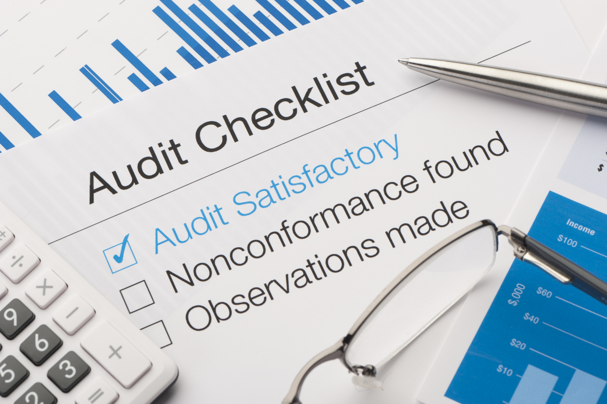

Exchangerzone Consulting Division is providing great quality professional consulting services at optimum prices to
individual, corporates, national and international NGOs, and government agencies. We are the first company in
Afghanistan that provides wide range of specialized services at international standards. Exchangerzone Consulting
Division has over 50 full-time highly qualified staffs in Kabul, and a pool of over 120 professionals across all 34
provinces of Afghanistan. We have 12 international consultants working for us. We at Exchangerzone Consulting Division
strive to serve our clients with the highest levels of efficiency, integrity and accountability.
We work in key business areas of audit, advisory and consulting services including taxation financial management,
investment analysis, financial market research and feasibility studies, financial institutions management services,
risk management and training services.
Auditing Service
One of the most challenging jobs in Afghanistan is to manage the finance of a company according to the international
best practices and standards. Exchangerzone, Inc. provides high quality, and most comprehensive and rigorous, financial
auditing services in Afghanistan. Our financial services are based on International Financial Reporting Standards
(IFRS) and Afghan Laws.

Taxation Service
Our taxation services will support companies to compute and clear their tax obligations. This will help businesses to
comply with government of Afghanistan and control tax evasion. Exchangerzone has a pool of national and international
specialists in Afghanistan taxation.
Accounting And Financial Management Services
Accounting and financial management is the key to ensuring transparent business operations. Services under this head
include ensuring mandatory monthly, quarterly and annual filings are submitted correctly and on time. The company will
conduct state-of-the-art financial management technology for our clients.
Our Investment analysis and portfolio management services are designed to target key review stages across the program
life cycle thus equipping customers with the information they need at the right time. Whilst these services are
configurable to your requirements, they are broadly defined as below:
Economic Analysis for a sound justification for program approval and realistic return on investment
Investment Appraisal for a rigorously consideration of thorough analysis of potential courses of action
Design Trade Studies for in-depth comparisons that provide detailed insight into the costs and interfaces of
alternative systems
Cost Analysis and Decision Support for identification of financial resources required and provision of robust
analytical data for affordability reviews.
Market Research Services & Feasibility Studies
Exchangerzone uses a holistic approach that combines trained local staff and cutting edge technology to ensure
accurate, timely and reliable data can be gathered across thirty-four provinces of Afghanistan, and analyzed quickly
and comprehensively. Exchangerzone, Inc. market research services include labor market studies, cost-benefit and policy
analyses, research on best practices and many other related areas.
Financial Institutions Management Services
The financial industry in Afghanistan has grown tremendously but is still in infant stage. Exchangerzone, Inc. offers
professional bank and financial institutions management services. Our services in this section includes all the areas
of banking i.e. operations, risk management, credit, compliance, IT, investment, customer services, anti money
laundering and CFT etc.
Risk Management
Exchangerzone team has many years of experience in identifying, measuring, prioritizing and proposing risk mitigation
measures for the financial sector of Afghanistan. Exchangerzone provides risk management for financial institutions
while maintaining international standards.
Group Guarantee Loan (GGL)
A loan for Groups and Associations with membership of 5 - 10 people who are willing to guarantee
each other. You should
know and trust each other and be doing business in the same location. The loan is for expanding
your business.
Exchangerzone Training Services
Training and development of employees forms an essential function of any HR department. Exchangerzone Training Services
is established to provide international standards training for banking and finance sectors. Exchangerzone offers best
training services through our subject matter national and international professional specialists.
Enterprise Risk Management Services
We offer comprehensive Enterprise Risk Management service, allowing you to select from a wide range of specifically
targeted services or purchase an integrated end-to-end service that will allow you to better understand the risks as
well as SWOT analysis associated with successful delivery of your project or business objectives.
We can support you through the process of identifying potential risks through facilitated workshops and the generation
of a comprehensive risk register, helping you to evaluate technical and project/program risks and identify
cost-effective mitigation actions. We can then use this information to undertake quantitative risk analysis (both cost
and schedule) to highlight the key drivers to delivering your objectives and focus management attention.
Wealth Management Services
Wealth management is a professional service which is the combination of financial/investment advice, accounting/tax
services and legal/estate planning. In general, wealth management is more than just investment advice as it can
encompass all parts of a person's financial life. We are the first company in Afghanistan to offer wealth management
services. Our professional national and international team is committed to offer best quality services with competitive
prices.
Corporate Finance & Restructuring Services
Our Corporate Finance and Restructuring practices is focused on delivering restructuring and business transformation
solutions. Committed to our clients’ success, our professionals address the full spectrum of financial, operational and
transactional risks and opportunities. Among our core strengths is providing expertise in guiding companies through the
value creation lifecycle. Our targeted offerings include restructuring, insolvency, litigation support, interim
management, capital market advisory, post-acquisition integration, valuation, tax advisory as well as financial
management and performance improvement solutions.
Finance Performance Management Services
We help develop a holistic view of performance drivers and improve the connection between business performance and
incentives. This work enables CFOs to provide decision-makers with information that is timely, readily accessible, and
relevant – along with the confidence and transparency they desire.
Finance Process Improvement Services
We help improve, rationalize and enhance core finance processes such as accounts receivables and payables, fixed
assets, close-consolidate-report, planning-budgeting-forecasting and data/management reporting.
Finance Strategy Services
We help develop a vision, strategy and plan that is linked with company objectives, and also offer innovative one-day
workshops to facilitate strategic planning and executive alignment.